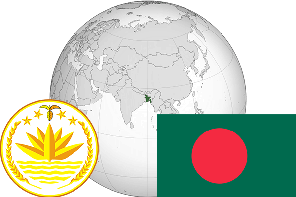

To`liq nomi: Bangladesh Xalq Respublikasi
Region: Janubiy Osiyo
Qonunchilik shakli: Parlamentar Respublika
Mustaqillik kuni: 16-dekabr 1971-yil Pokistondan
Poytaxti: Dakka
Maydoni: 144 000 km² (dunyoda 92 -o`rinda )
Chegaradosh davlatlari: Hindiston, Birma
Aholisi: 168 957 745 (dunyoda 8 -o`rinda ) 2015 -yil roʻyxat
Aholi zichligi: 1154,7/km²
Aholining o`rtacha yoshi: 62,85 yil ( 62,9 ayollar, 62,8 erkaklar)
Rasmiy tili: Bengal tili
Dini: 85% musulmonlar, 12% induistlar, 0,5% buddistlar, 0,3% xristianlar
Pul birligi: Taka (BDT)
Telefon prefiksi: +880
Internet domen: .bd
Xalqaro tashkilotlarga a`zoligi: BMT (1974 -yildan),
Dengiz va okeanlarga chiqishi: Bengaliya qo`ltig`i
YIM: Butun: $ 572,440 mlrd, Jon boshiga: $ 3,581 (2015 - yil roʻyxati)
Yirik shaharlari: Dakka, Chittagong